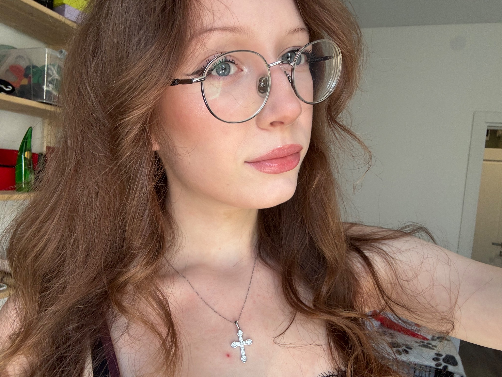

Фестиваль по мотивам
«Очень странных дел»
Оформление социальных сетей фестиваля, посвящённого сериалу «Очень странные дела».
Привет, я Ксения.
Учусь превращать идеи
в визуальные истории.
Создаю цифровой контент и работаю с графикой. Изучаю веб-разработку, чтобы соединять дизайн с удобными и адаптивными страницами.
Связаться со мной
Внимание к деталям.
Интерес к новому.
Любовь к визуальному.
Мне интересно, как цвет, форма и текст работают вместе — и помогают идее стать заметной.
Я живу в Санкт-Петербурге и учусь в СПбГУПТД на направлении «ИТ-технологии создания цифрового контента». Пробую себя в графическом дизайне, оформлении социальных сетей и создании визуального контента.
Ответственно отношусь к задачам, соблюдаю сроки и внимательно работаю с деталями. Мне нравится общаться, обсуждать идеи и находить решения вместе с другими.
Спорт · Музыка · Дизайн · Концерты
Коммерческого опыта пока нет.
Развиваю навыки через учёбу
и творческие проекты.
Оформление социальных сетей фестиваля, посвящённого сериалу «Очень странные дела».
Разработка гайдлайна для оформления фестиваля рэп-музыки.
Здесь — описание моих проектов. Визуальные материалы добавлю по мере подготовки портфолио.
Санкт-Петербургский государственный университет промышленных технологий и дизайна
ИТ-технологии создания
цифрового контента
Сейчас осваиваю HTML и CSS, адаптивную вёрстку с Grid и Flexbox, Git и Figma. Отдельных курсов и сертификатов пока нет.